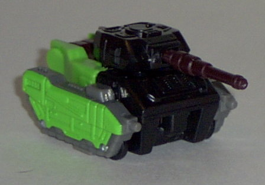
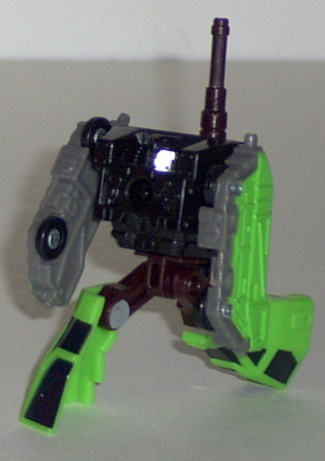
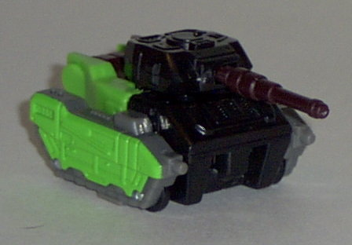
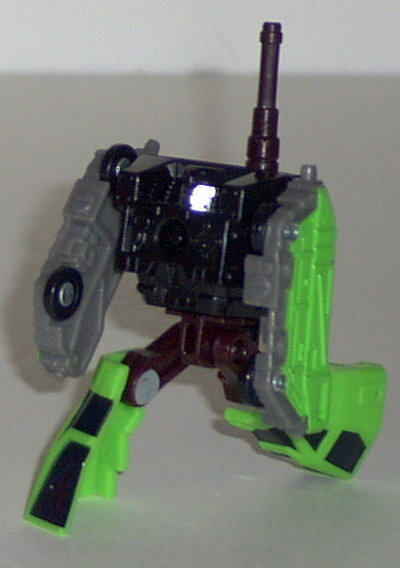
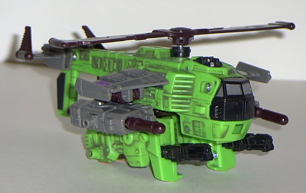
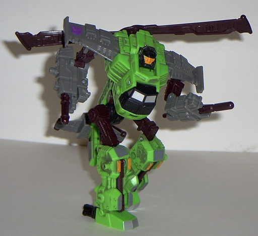

Crumplezone
(Powerlinx)
Crumplezone
(Powerlinx)
 
Allegiance : Minicon
Size : Mini-Con
Difficulty of Transformation : Very Easy
Color Scheme : Dark bluish-black, gray, bright green, and some silver and brownish maroon
Rating : 3.9
(NOTE: Because this set is a repaint, this is not a full-blown review. This mainly covers any changes made to the set and the color scheme, and merely compares it to the original Cyclonus w/ Crumplezone. For a review on the mold itself, read the review of Armada Cyclonus w/ Crumplezone here .)
Crumplezone
(Powerlinx)


Allegiance
: Minicon
Size
: Mini-Con
Difficulty of Transformation
: Very
Easy
Color Scheme
: Dark bluish-black,
gray, bright green, and some silver and brownish maroon
Rating
: 3.9
Y'know, Powerlinx Crumplezone
would actually be an improvement over his original version if it wasn't
for that darned bright green. The black, gray, and brownish maroon really
go together, and themselves create a really dark, "down and dirty" feel
for Crumplezome. But then they had to go and ruin it by throwing in all
that bright green, which not only looks disgusting by itself, but does
not go with the other colors AT ALL and completely ruins any cool factor
Powerlinx Crumplezone's paint job had going for it.
No mold changes have
been made to Powerlinx Crumplezone.
Most of Powerlinx Crumplezone's
color scheme is nice, but that bright green completely throws it off and
ruins him. Not recommended over the original version.
 Cyclonus
(Powerlinx)
Cyclonus
(Powerlinx)


Allegiance
: Decepticon
Size
: Super-Con
Difficulty of Transformation
: Easy
Color Scheme
: Bright green, gray,
dark bluish-black, brownish maroon, and some bright flat orange and silver
Powerlinx ports
: 4 (all gimmicked)
Rating
: 5.9
My comments on Powerlinx
Cyclonus are pretty similar to that of Powerlinx Crumplezone's- his other
colors work well together, except for that ridiculous bright green. And
it's even more of a problem on Powerlinx Cyclonus, because said bright
green IS his primary color. It's supposed to be some kind of tribute to
G1 Springer, who was also green and had a helicopter alt mode, but he wasn't
BRIGHT green. In fact, now that I think of it, if the green had been darker,
it would have worked wonders on Cyclonus. But alas, that's not how it turned
out. At least the the gray paint wash on the bright green helps give it
a "worn" feeling, which fits the rest of the darker color scheme. The ugly
bright orange on Cyclonus' face is still there, but it actually looks good
on those couple of paint apps on his lower legs.
No mold changes have
been made to Powerlinx Cyclonus, so he can still combine with those geared
Minicons and stuff.
Powerlinx Cyclonus'
bright green detracts from what was already the worst of the Armada Decepticons.
If you want a new Decepticon, get ANYONE but this guy.
No Stats
Review by Beastbot